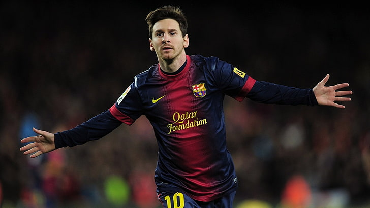
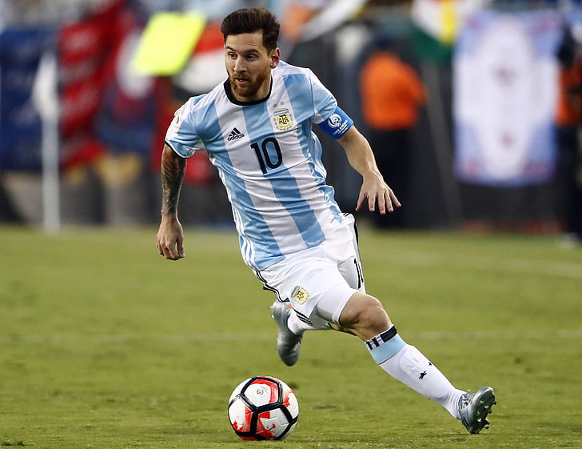
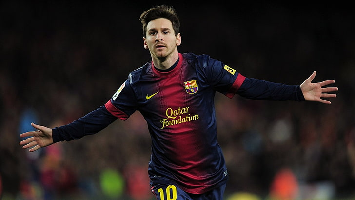
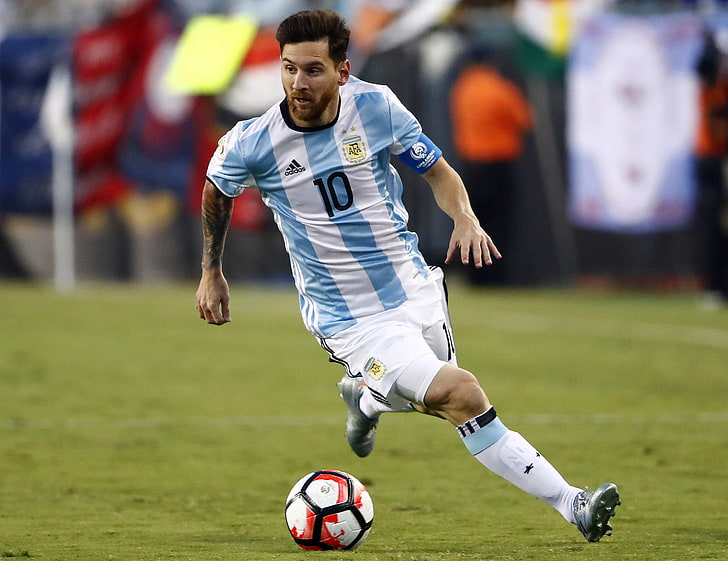
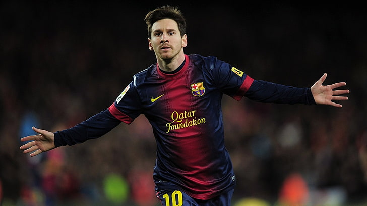
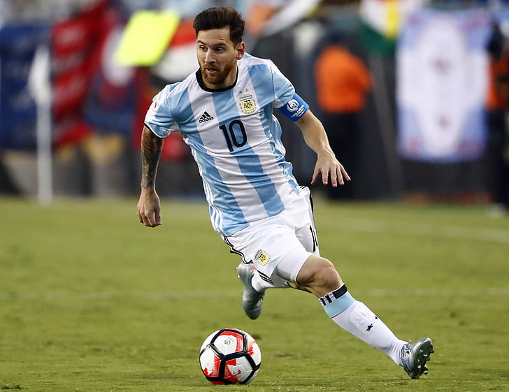
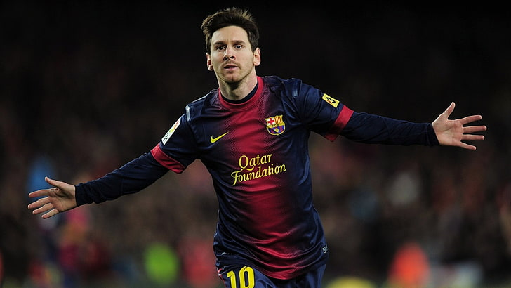
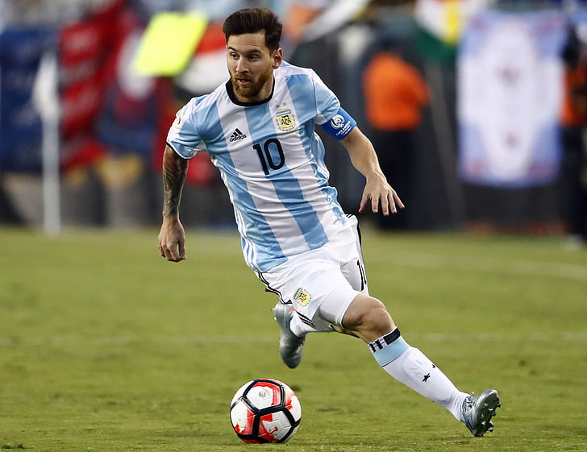

Lionel Messi is an Argentine professional soccer player who currently plays as a forward for Paris Saint-Germain and the Argentina national team. He is considered one of the greatest soccer players of all time and has won numerous awards, including six FIFA Ballon d'Or awards, which are given to the best player in the world. He spent the majority of his career playing for Barcelona, where he won ten La Liga titles and four UEFA Champions League titles.
Born on June 24, 1987, in Rosario, Argentina, soccer player Lionel Messi moved to Spain at the age of 13. Messi became a star in his new country, scoring at will while leading his club to championships. Messi embarked on an all-out assault on the record books in 2012. He became the first player to score five goals in a Champions League match in early March, and a few weeks later he surpassed Cesar Rodriguez's club-record 232 goals to become Barcelona's all-time leading scorer.
By the end of 2012, Messi had accumulated an astounding 91 goals in club and international play, eclipsing the 85 netted in a single calendar year by Gerd Muller in 1972. Fittingly, he broke one more record when he was named the FIFA Ballon d'Or winner in January 2013, winning the prestigious award four times in a row. Internationally, Messi led team Argentina to the finals of the 2014 World Cup. Although his team lost to Germany, he was named best player of the tournament.
| Year | Team | Awards |
|---|---|---|
| 2004-2005 | Barcelona | La Liga |
| 2005-2006 | Barcelona | La Liga, Super Copa de España, EUFA Champions League, |
| 2008-2009 | Barcelona | La Liga, Copa del Rey, UEFA Champions League, FIFA Club World Cup |
| 2009-2010 | Barcelona | La Liga, Super Copa de España, EUFA Super Cup |
| 2010-2011 | Barcelona | La Liga, Super Copa de España, EUFA Champions League, FIFA Club World Cup |
| 2011-2012 | Barcelona | Copa del Rey, Super Copa de España, EUFA Super Cup |
| 2012-2013 | Barcelona | La Liga, |
| 2013-2014 | Barcelona | Super Copa de España |
| 2014-2015 | Barcelona | La Liga, Copa del Rey, EUFA Champions League, FIFA Club World Cup |
| 2015-2016 | Barcelona | La Liga, Copa del Rey, EUFA Super Cup |
Throughout his career, Messi has been involved in charitable efforts aimed at vulnerable children, a commitment that stems in part from the medical difficulties he faced in his own childhood. Since 2004, he has contributed his time and finances to the United Nations Children's Fund (UNICEF), an organisation with which Barcelona also have a strong association.
Messi has served as a UNICEF goodwill ambassador since his appointment in March 2010, completing his first field mission for the organisation four months later as he travelled to Haiti to bring public awareness to the plight of the country's children in the wake of the recent earthquake. He has since participated in UNICEF campaigns targeting HIV prevention, education, and the social inclusion of disabled children. To celebrate his son's first birthday, in November 2013, Messi and Thiago were part of a publicity campaign to raise awareness of mortality rates among disadvantaged children.
In addition to his work with UNICEF, Messi founded his own charitable organisation, the Leo Messi Foundation, which supports access to health care, education, and sport for children. It was established in 2007 following a visit Messi paid to a hospital for terminally ill children in Boston, an experience that resonated with him to the point that he decided to reinvest part of his earnings into society.
Through his foundation, Messi has awarded research grants, financed medical training, and invested in the development of medical centres and projects in Argentina, Spain, and elsewhere in the world. In addition to his own fundraising activities, such as his global "Messi and Friends" football matches, his foundation receives financial support from various companies to which he has assigned his name in endorsement agreements, with Adidas as their main sponsor.